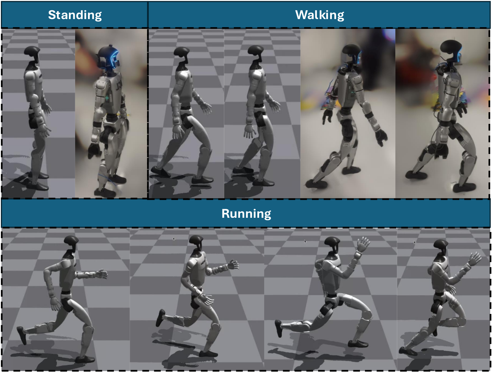
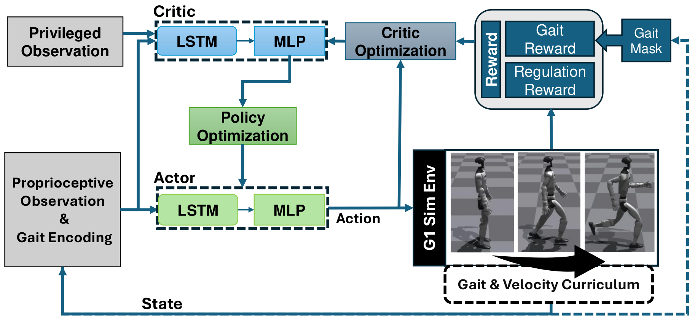
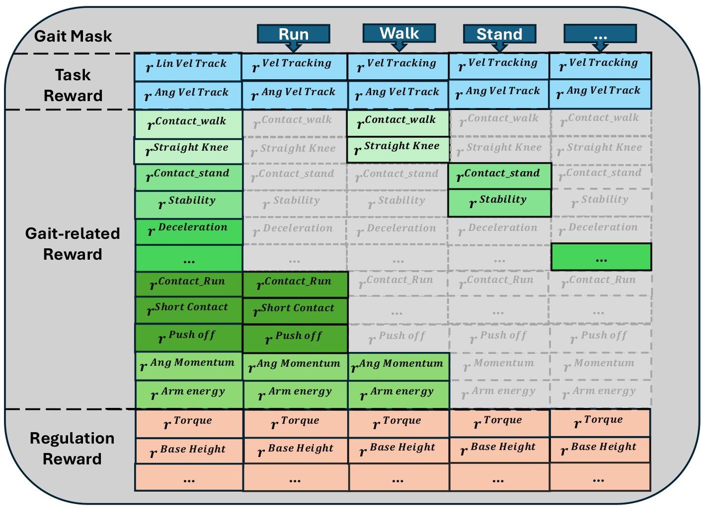
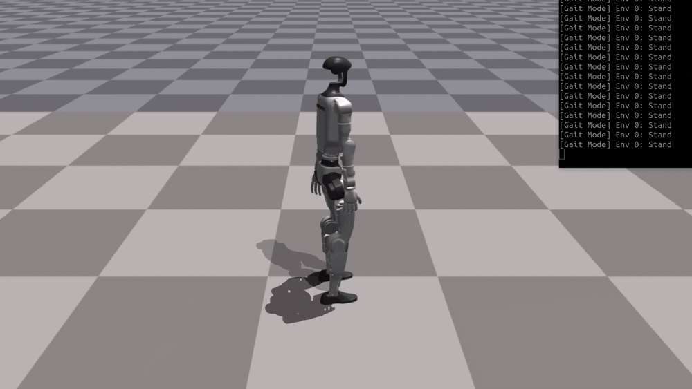
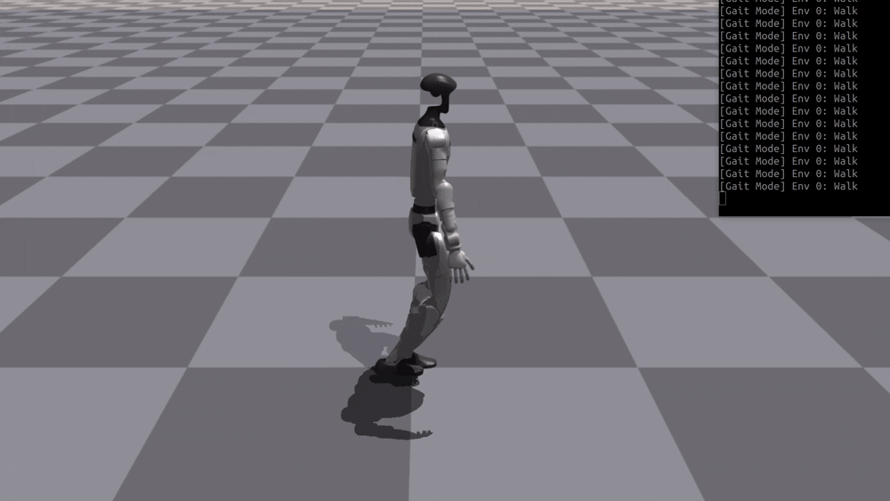
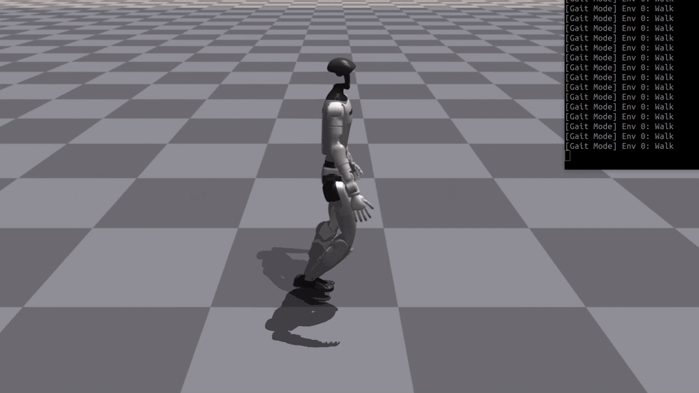
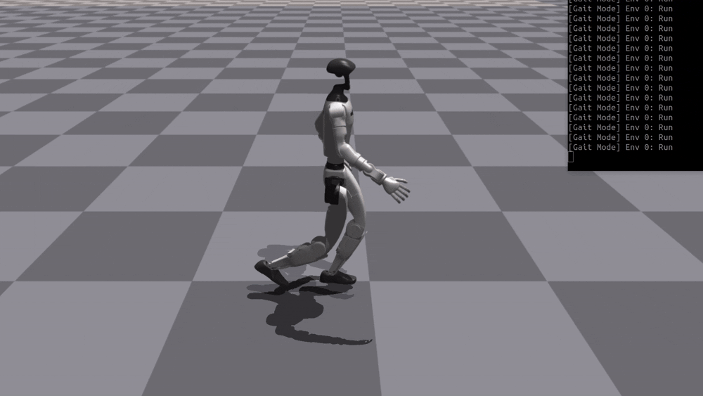
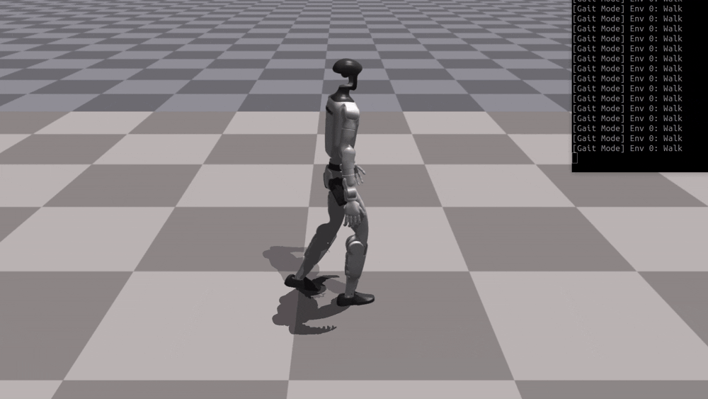

Gait-Conditioned Reinforcement Learning
with Multi-Phase Curriculum for Humanoid Locomotion
Humanoid Robotics Lab, Department of Computer Science, University College London
A unified policy that performs standing, walking, and running with smooth transitions, via a gait-conditioned reward routing mechanism and a multi-phase curriculum. Real-world deployment on Unitree G1.

Highlights
- Gait-conditioned reward routing with per-mode terms and shared regulation.
- Multi-phase curriculum: walk → walk+stand → +transitions → +run.
- Masked critic/value loss & optional multi-head actor to avoid interference.
- Real-robot evaluation on Unitree G1; smooth walk↔stand transitions.
- Open-source training configs and logs for reproducibility.
Framework
A unified recurrent policy with gait encoding and a structured gait/velocity curriculum. Gait-aware losses reduce interference across modes and stabilize multi-gait learning.

Gait-Conditioned Reward
The gait mask routes gait-specific objectives (e.g., contact, push-off, stillness) while regulation terms remain shared, mitigating reward interference among run/walk/stand.

Simulation







Video
Citation
@inproceedings{peng2025gaitconditioned,
title = {Gait-Conditioned Reinforcement Learning with Multi-Phase Curriculum for Humanoid Locomotion},
author = {Peng, Tianhu and Bao, Lingfan and Zhou, Chengxu},
booktitle = {IEEE-RAS International Conference on Humanoid Robots},
year = {2025},
}